SlimPer：让个性化排序模型既“瘦”又“聪明”
- 论文：SlimPer: Make Personalization Model Slim and Smart
- 作者：Siqi Wang、Xianjie Chen 等；机构：Meta Platforms, Inc.
- 版本：arXiv:2607.12281，v1，2026-07-14
- 方向：工业推荐、长用户历史、多模态排序、模型效率
- 代码与项目：论文正文未给出可核验的官方代码地址，当前记为未核验
- 阅读边界：这是 arXiv v1；以下离线与在线数字均为作者在 Instagram 内部数据和系统上的报告，不代表独立复现或跨平台保证。
1. 背景和问题
工业排序模型面对的输入并不是一条同质序列，而是三种信息的混合：高基数稀疏特征概括创作者、类别等长期兴趣；用户行为序列保留具体内容、动作、停留时长和时间；连续稠密特征描述实时统计、内容质量和上下文。近年的统一模型常借用 Transformer，把这些 token 放进深层交互网络。SlimPer 的出发点是：这种借用连同了语言模型的计算前提，却没有连同语言模型的监督结构。
自回归语言模型在每个位置预测下一个 token，因此保留每个位置的中间表示有直接用途。最终排序通常只为一个〈用户，候选物品〉输出一组多任务相关性分数，没有逐位置输出。若仍在每层维持长度为 $N$ 的状态，深度 $L$ 与历史长度 $N$ 会共同放大显存；全注意力还产生随 $N^2$ 增长的交互，其中大量计算发生在 user-side token 之间，而非候选物品与用户证据之间。论文将此称作“Transformer mismatch”：开销不全是推荐任务本身要求的，而有一部分来自架构的默认表示方式。
这并不意味着用户历史内部关系不重要。SlimPer 仍为事件引入局部上下文编码，并让每层访问完整原始历史；它削减的是跨层传播的 $N$ 规模中间张量。核心问题因而变成：能否只维护固定大小的〈用户，物品〉知识库，同时允许每一层重新查询全部 user-side 证据？如果可以，增加层数就主要增加固定大小知识库的细化，而不是复制整条历史的隐藏状态。这里的知识库是每个候选的连续表示槽，不是外部数据库，也不是把历史预先摘要成一次性 user embedding。
另一个生产约束是一次 request 往往为同一用户排序多个候选。论文给出的典型值是训练中平均每个 request 含约 $B\approx5$ 个候选，线上可到 $O(10^2)$。如果每个候选重复计算和保存用户 token，浪费会随候选数增长。SlimPer 把所有 user-side 模态统一纳入 request-only optimization（ROO）：用户 token 每个 request 计算一次，再由不同候选的知识库反复查询。这里的“选择”也不是稀疏专家网络的 top-k expert routing，而是由当前候选条件化的 query 对原始用户 token 做软检索；其目标是分配证据，而不是动态激活不同参数专家。
作者的目标不是单纯压缩已有模型参数，而是重新分配交互预算：减少 user-user 的跨层状态维护，把每层的交互集中到 $K$ 个知识库槽与 $N$ 个用户 token 之间。Slim 指固定大小中间状态和 request 级共享，Smart 指显式 user-item 匹配及逐层修正。直觉上，第一层可搜索“用户是否长期喜欢狗视频”这类宽泛证据，后层再根据近期跳过行为修正候选相关性；因为每层仍能读原始事件，早期遗漏不必永久继承。
这篇论文需要分三种证据来读。第一种是结构证据：复杂度表是否真的把 tokenization、堆叠状态和候选共享拆开；第二种是受控离线证据：在相同历史长度、相同特征和训练区间下，质量与资源是否同时改善；第三种是生产证据：加长历史和 full-traffic A/B 是否仍有收益。三者不能互相替代。渐近复杂度不等于实际延迟，内部 NE 改善不等于在线 uplift，作者报告的上线结果也不等于公开可复现结论。
因此，真正待回答的不是“固定瓶颈能否无条件战胜 Transformer”，而是四个更窄的问题：固定知识库是否保留足够任务信息；每层重新访问原始 token 是否弥补压缩损失；ROO 的摊销是否在候选 batch 中兑现；较长历史带来的增益是否覆盖 QPS 和内存代价。后文按论文原有的 tokenization、Select–Match–Refine、复杂度、离线与线上实验顺序逐一核对。
2. 方法
2.1 多模态 tokenization 与知识库初始化
输入先被分成 user-side 和 item/cross-side。稀疏特征经过 embedding lookup 后做 sum/mean pooling；稠密特征拼接并送入 MLP；第 $t$ 个历史事件则把内容稀疏向量、显式/隐式动作、位置与相对时间、邻域上下文投影到同一维度后相加。论文用滑动窗口内的卷积、局部注意力或二者组合实现上下文函数，几种变体表现相近。这样，深层主干可以不维护全部位置状态，但单个事件 token 已经携带局部行为连续性。上下文函数和知识库初始化写作：
符号解释： $N$ 是全部 user-side token 数，$K$ 是知识库槽数，$d$ 是隐藏维度，$w$ 是事件局部窗口；$\mathbf X_k\in\mathbb R^{K\times d}$ 表示第 $k$ 层对当前〈用户，候选〉的紧凑认识，$\mathbf S_{\mathrm{in}}$ 来自 item/cross-side token。论文主配置 $K=64,d=256$，所以候选信息从第 0 层进入知识库，而 user-side 原始证据仍可在 request 内复用。
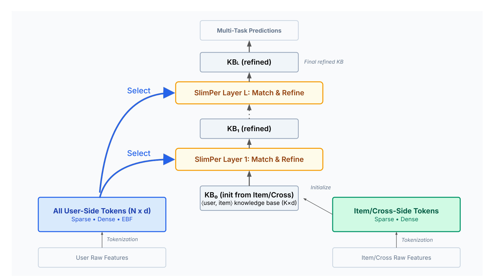
图中左侧 user-side token 在每一层都能被直接查询，右侧 item/cross-side token 只负责初始化候选特定的知识库；真正跨层传递的是中间的 $K\times d$ 状态。该图证明的是计算图如何拆分，而不是性能已经提高：共享左侧 token 能否减少实际内存，仍取决于 request batching 和实现是否避免复制；固定知识库能否保存足够信息，也必须由 K 消融验证。它还揭示了一个容易忽略的差别：同一用户的不同候选共享原始证据，却各自拥有 $\mathbf X_0$、query 和细化轨迹，因此 ROO 并没有把所有候选压成同一个 user embedding。
事件 token 的细节可以写成四路求和，其中内容 sparse、动作类型、时间和邻域上下文分别编码：
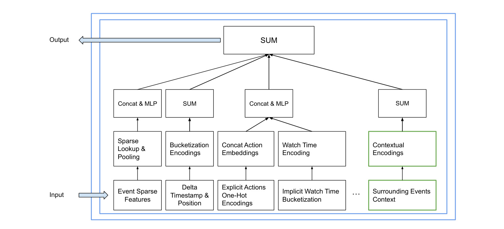
这张对象图沿输入到输出展示了事件 token 的真实构成：内容经 sparse lookup/pooling，位置和时间差经 bucket，显式动作与隐式 watch time 分路编码，邻近事件再提供 contextual encoding，最后以 SUM 和 MLP 汇合。它支持“历史不是单一 item ID 序列”的方法事实，也说明 SlimPer 的长历史能力仍依赖 tokenization 端的局部建模。作者的消融称 contextual encoding 为 reshare 带来约 $-0.15\%$ NE，主要来自事件类型上下文，增加事件内容的边际改善小于 $0.02\%$ NE；这只是在 Instagram 内部任务上的方向性证据，不能外推为内容信号普遍不重要。
2.2 Select、显式 Match 与残差 Refine
每层执行 Select–Match–Refine。首先由当前知识库生成 $q$ 个查询，对固定数量的稀疏 token 使用参数化 MLP 选择核，对可变长事件序列使用温度为 $\gamma$ 的 scaled dot-product attention；稠密特征不经过注意力核，而是在细化时直接融合。两个 user-side 流的选择结果为：
序列核满足 $\Phi_e=\mathrm{Softmax}(\gamma\mathbf Q\mathbf E^\top)$。关键机制在于 query 来自已经包含候选信息的 $\mathbf X_k$，所以同一用户历史对不同候选会产生不同证据分布；稀疏和序列模态又都由统一知识库条件化。这里的 Select 是软加权聚合，论文没有声称把未选 token 从所有计算中硬删除；线性复杂度来自固定 query 数对 N 个 token 的 cross-attention，而非离散路由。
随后，模型从知识库生成 $t$ 个多面模板 $\mathbf T=\mathcal L(\mathbf X_k)\in\mathbb R^{t\times d}$，用显式点积得到 $\boldsymbol\lambda_s,\boldsymbol\lambda_e\in\mathbb R^{q\times t}$，再做归一化、拼接和残差更新：
这里的 $\boldsymbol\lambda$ 不是普通 attention 输出的别名，而是“已选择证据”和“候选条件模板”之间的显式相关性矩阵；$\mathbf D$ 是直接传入的 dense token。每层还可为任务 $p$ 产生 $\mathbf P_k^p=\mathrm{MLP}_p(\mathcal L(\mathbf X_k))$，跨层求和后映射为多任务 logits。作者生产设置通常堆叠 5–10 层，因而每一层既能修正知识库，也能向最终任务表示贡献。
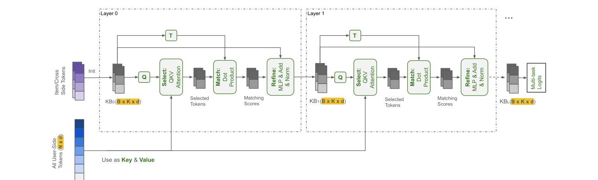
沿图从左到右，$\mathbf X_0$ 先产生 Q 和模板 T；Q 从共享的 $N\times d$ 用户 token 中检索，T 与所选证据做点积，随后 MLP、残差和归一化写回 $\mathbf X_1$，第二层重复同一循环。该图最重要的证据不是模块名称，而是两条并行状态路径：上方只有固定大小 KB 跨层传播，下方完整 user-side token 仍作为每层 Key/Value。这样，早层遗漏的事件仍可能在后层被重新检索。图中 T 与 Q 都由当前 KB 产生，意味着“选什么”和“如何匹配”会随候选及前层证据一起变化，而不是一次静态召回。边界也很明确：完整访问避免“只能依赖压缩状态”，却不保证优化一定找到被遗漏证据；是否真有逐层收益要看深度消融和注意力分析。
2.3 固定瓶颈、交互容量与代价
若把 $K,q,d$ 视为固定超参数，SlimPer 每层选择成本随 $N$ 线性增长；更完整的记法是堆叠计算 $O(LNq)$，跨层中间状态内存 $O(LK)$，user-item 交互容量按作者定义为 $O(LNK)$。ROO 使 tokenization 的每候选成本约为 $O(N/B)$，其中 $B$ 是同一 request 的候选数。相比之下，论文中的 ROO-aware HSTU 型基线仍在各层传播 N 规模状态，表中堆叠内存为 $O(LN/B)$，计算为 $O(L(N+1)^2/B)$。
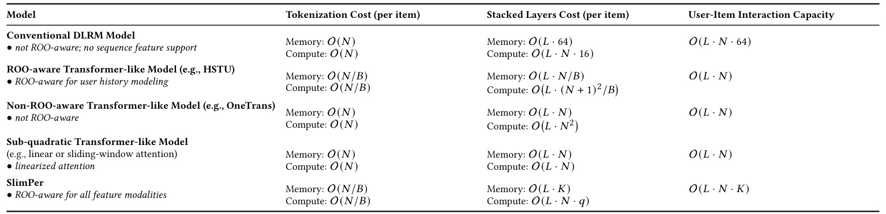
这张表必须按三列读。Tokenization cost 的 $O(N/B)$ 收益依赖 request 分组和候选数，不能脱离 B 宣称固定倍数；Stacked Layers Cost 才是固定 KB 解除深度—长度耦合的核心，SlimPer 写为内存 $O(LK)$、计算 $O(LNq)$；User-Item Interaction Capacity 是作者定义的结构容量，SlimPer 的 $O(LNK)$ 比 Transformer 型的 $O(LN)$ 多一个 K，但它不等价于统计学习能力或最终精度。线性或滑窗 attention 虽能把计算降到 $O(LN)$，若仍跨层保留 N 个状态，其内存和交互预算分配仍与 SlimPer 不同。表中 DLRM 的常数 64、Transformer 的 B 摊销都来自特定实现，跨系统比较必须重新测量。
论文另用信息瓶颈提供直觉：若 $\tau$ 个任务都是二元结果，目标熵上界可写为 $H(Y)\le\tau$ bits，通常远小于 $K\times d$ 的连续表示容量；每层重读原始证据也缓解一次压缩不可逆的问题。但这不是严格性能保证：标签相关、连续目标、有限精度和优化误差都会破坏简化前提。也不能把 $O(N)$ 直接等同于低延迟，因为 kernel launch、embedding lookup、通信、候选 batching 和在线内存布局都不在渐近式中。最终必须用 K、层数、QPS、显存和长序列曲线共同验证。
3. 实验结果
作者在 Instagram Reels 与 Feed 的 final-stage ranking 上比较 SlimPer 和 mature late-fusion 基线：HSTU 处理可变长历史，Wukong 处理固定 sparse/dense 特征。训练与评估日期范围、特征集和优化器设置在比较中保持一致；模型训练一轮，Shampoo 学习率为 0.05。公开材料没有给出样本量、日期、标签分布、模型总参数量或硬件型号，因此只能核对相对变化，不能独立重建同一实验。
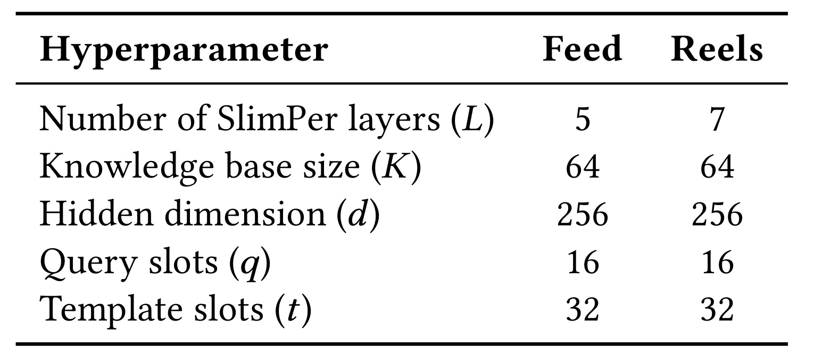
Feed 使用 5 个 SlimPer 层，Reels 使用 7 层；二者都取 $K=64,d=256,q=16,t=32$。这张表证明主实验没有通过改变知识库宽度来区分两个 surface，主要结构差异是层数；它也把后续 K 和 L 消融的基准钉在 64 与 7。按照公式形状，每层有 16 个 query 和 32 个 template，显式匹配矩阵为 $16\times32$，这个常数对理解表中线性成本很关键。可复现边界同样清楚：表中未披露各 MLP 宽度、head 数、特征词表、候选 batch 分布、优化器其他参数或参数总量，因此足以重建模块形状，不足以复现绝对吞吐。Feed 和 Reels 的数据分布也不同，不能把两行结果当作同一数据集上的层数消融。
3.1 离线主结果：同长度收益与扩长代价
离线指标是 Normalized Entropy。$p_k$ 是任务 $k$ 的全局正样本率，分母是预测常数 $p_k$ 的 BCE，因此 NE 越低越好；作者称约 $0.03\%$ NE 改善在经验上具有显著性，但正文没有给出正式置信区间：
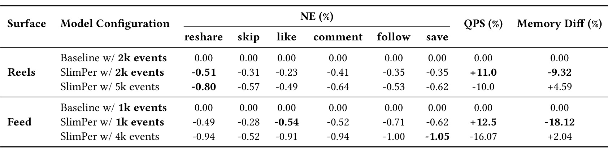
同历史长度比较最干净。Reels 2k 下，SlimPer 六个任务 NE 分别改善 $-0.51,-0.31,-0.23,-0.41,-0.35,-0.35\%$，训练 QPS 提升 $11.0\%$，平均内存降低 $9.32\%$。Feed 1k 下，六项改善为 $-0.49,-0.28,-0.54,-0.52,-0.71,-0.62\%$，QPS 提升 $12.5\%$，内存降低 $18.12\%$。这两行是“同长度同时改善质量和效率”的直接证据。扩长配置回答的是另一个问题：Reels 5k 的 reshare NE 为 $-0.80\%$，但 QPS 下降 $10.0\%$、内存增加 $4.59\%$；Feed 4k 的 save NE 为 $-1.05\%$，QPS 下降 $16.07\%$、内存增加 $2.04\%$。它们说明节省的结构预算可换取更长历史和更高质量，不说明扩长模型本身仍更省。NE、训练 QPS 和平均内存差是不同口径，不能相互替代。
3.2 长序列扩展、FLOPs 与线上披露
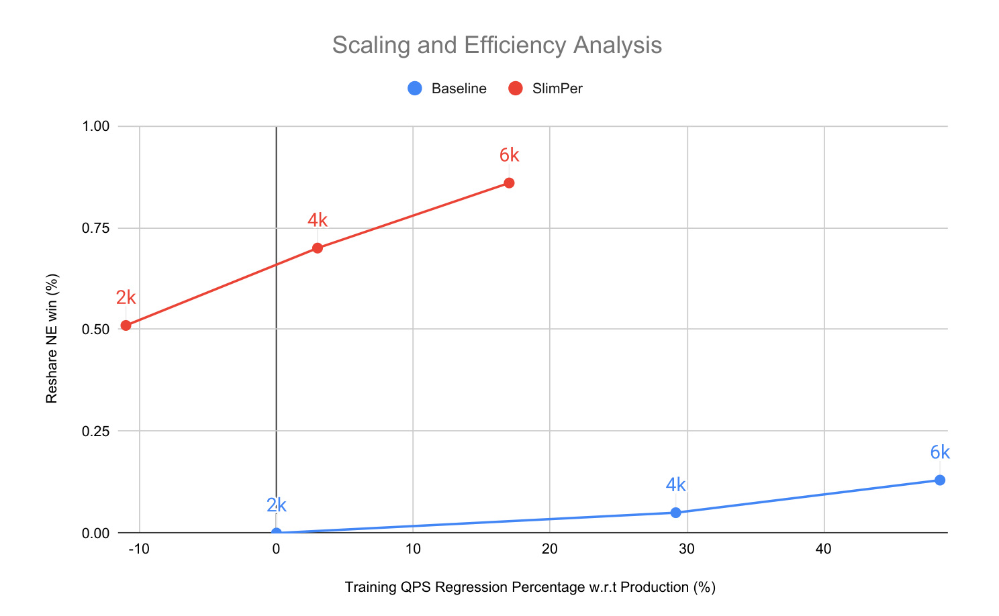
Reels reshare 的长度扫描中，红色 SlimPer 从 2k 的约 $0.51\%$ NE win 增到 6k 的约 $0.86\%$，6k 时训练 QPS regression 低于 $20\%$；蓝色 baseline 到 6k 只有约 $0.13\%$ NE win，却损失约 $48\%$ QPS。图中横轴是相对 production 的训练 QPS regression，负值代表吞吐提升，纵轴把“NE 降低”画成正的 win；因此不能把坐标正负与 Table 3 的 NE 正负直接混读。红蓝点都只覆盖三个长度且没有误差条，所谓单调趋势仍需更多随机种子和时间窗确认。曲线支持 SlimPer 在该内部设置下拥有更好的质量—效率前沿，但每个点同时改变历史长度，仍无法把收益完全分解为架构本身和额外历史信息。
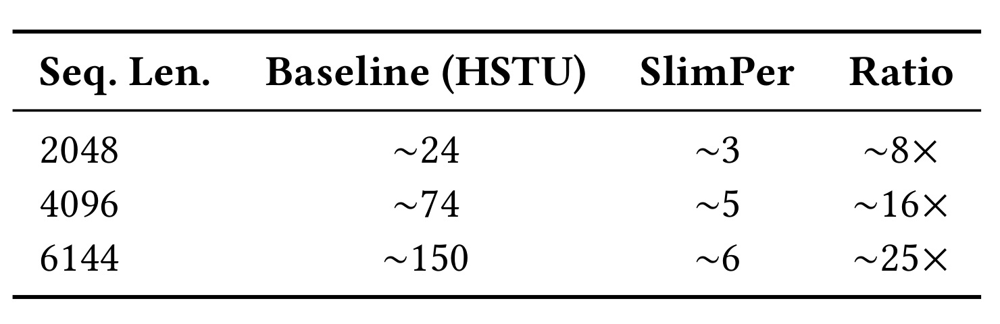
附录只统计前向矩阵乘，且 baseline 只计 HSTU encoder：长度 2048 时约 $24$ 对 $3$ GFLOPs，4096 时约 $74$ 对 $5$，6144 时约 $150$ 对 $6$，作者概括为约 $8\times,16\times,25\times$。表格真正支持的是差距随序列长度扩大这一算法趋势，而不是整模型端到端倍速；embedding lookup、Wukong、数据搬运、通信和 kernel 开销都未计入，4096 行的原始比值也只是近似 $16\times$。所以不能用 $25\times$ 推导 $25\times$ 在线加速，应该把它与 Figure 4 的训练 QPS 和 Table 3 的平均内存共同使用。
在线部分报告：Reels 5k 与 Feed 4k 通过预测试和回测后上线到 full traffic，多项主要 engagement 指标达到统计显著，聚合 topline 影响约为一次“典型显著上线”的 $10\times$，生态 guardrail（完整性、多样性、新鲜度）无回退，训练和推理 GPU 容量约中性；2026 年又上线 10k+ 事件变体。论文没有披露实验时长、流量规模、绝对 uplift、置信区间、多重检验处理或各指标明细，因此这些是重要的生产可行性信号，却不是外部可审计的定量结论。
3.3 知识库容量与层数消融
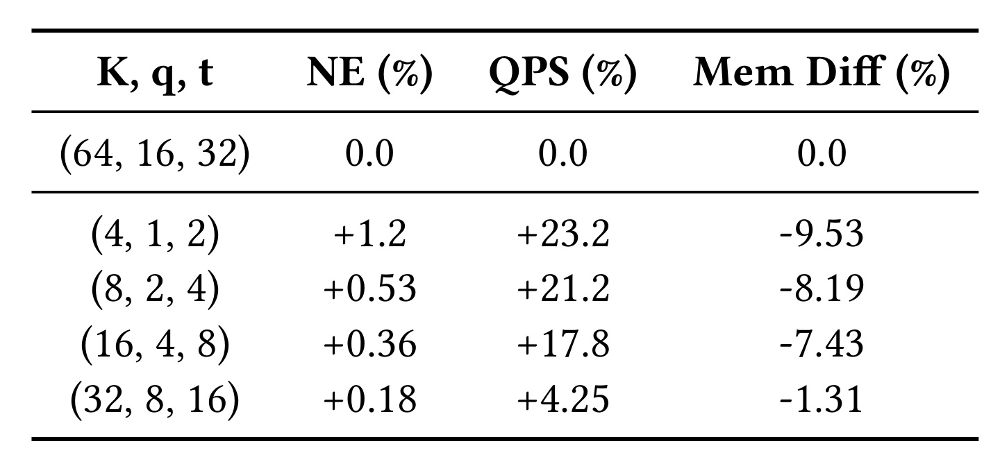
相对 $K=64,q=16,t=32$ 基线，把三者按比例缩到 $K=32$ 时，NE 恶化 $+0.18\%$，QPS 提升 $4.25\%$，内存降低 $1.31\%$；到 $K=4$ 时，QPS 提升 $23.2\%$、内存降低 $9.53\%$，但 NE 恶化 $+1.2\%$。这张表验证固定瓶颈不是越小越好：压缩确实换来速度和内存，但过小的槽与 query/template 容量丢失任务信息。K=8 与 K=16 的 QPS 分别提高 $21.2\%$ 和 $17.8\%$，而 NE 退化从 $+0.53\%$ 降到 $+0.36\%$，也展示了连续的质量成本折中。它不能单独证明 K 的作用，因为 $q=K/4,t=K/2$ 同时变化；后续复现应做单因素网格，分别固定 K、q、t，才能区分知识库存储容量、检索带宽和匹配模板数。
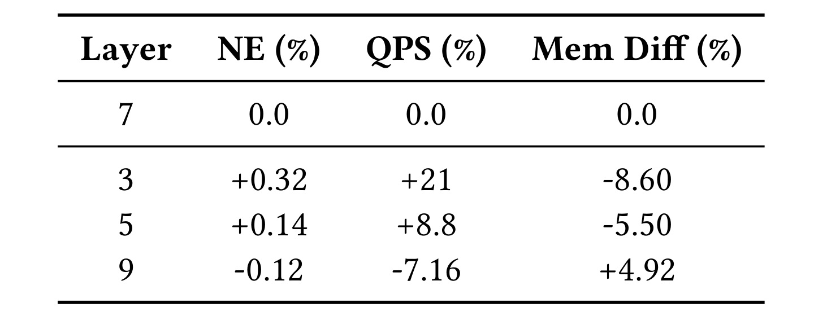
相对 7 层，3 层 NE 恶化 $+0.32\%$，换来 $+21\%$ QPS 和 $-8.60\%$ 内存；5 层恶化 $+0.14\%$，QPS 提升 $8.8\%$、内存降低 $5.50\%$；9 层改善 $-0.12\%$，但 QPS 下降 $7.16\%$、内存增加 $4.92\%$。这张表支持多轮细化的边际质量收益，也显示该收益并不免费：更深模型仍线性增加 $LNq$ 计算和 LK 状态。7 层是 Reels 的生产折中，不是理论最优；表中未给方差，$-0.12\%$ 是否对所有任务和时间窗稳定仍未知。结合 K 消融可见，SlimPer 的“瘦”来自固定中间宽度，不代表宽度和深度都应最小化，也不保证 Feed 应采用相同深度。
3.4 注意力模式能解释到什么程度
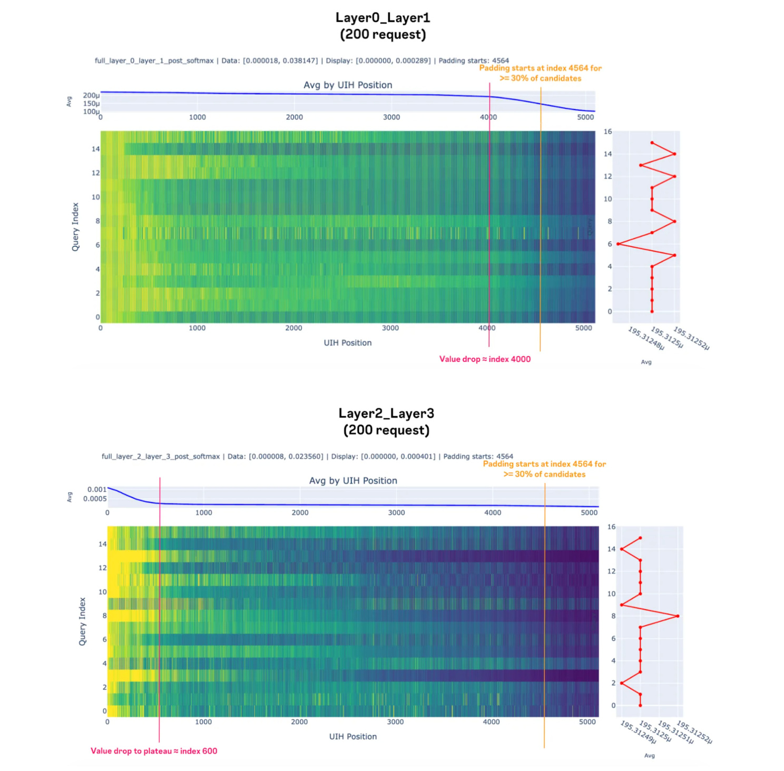
作者聚合 200 个长度 5k 的请求。Layer 0/1 在约前 4k 个索引保持较广权重，Layer 2/3 的分布更快下降并集中到约前 600 个近期索引；图中还标出 padding 从 4564 左右开始、约覆盖 30% candidates。上下子图都含 16 个 query index，与主配置 $q=16$ 对应，说明可视化覆盖多个检索槽而不是单一平均 query。它与“早层广泛收集、后层条件化收缩”的机制叙述一致，也说明每层确实访问了完整序列而非只读上一层摘要。但这是跨请求、跨候选的聚合热力图，颜色受 padding、索引方向和 softmax 标度影响，不能据此判断单个用户为什么得到某项推荐，更不能把权重大小当作因果贡献或线上增益来源。
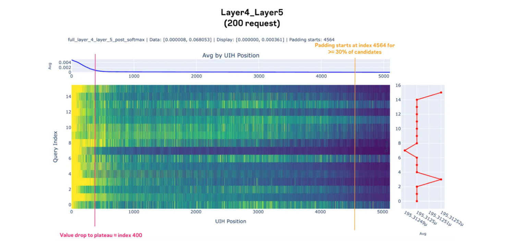
Layer 4/5 的平均权重进一步在最近约 400 个事件后进入平台区；右侧按 query 汇总的红线仍有明显槽位差异，表示并非所有 query 都分配相同总权重。与上一图连起来，论文提供的是“广到窄”的内部行为证据，而不是预测正确性的独立证明：注意力之后还有 value 聚合、显式点积、RMSNorm 和 MLP，最终 logit 并非注意力权重的线性拷贝。若要把该机制用于审核，应做高权重 token 删除、时间顺序置换、counterfactual replay，并按用户活跃度和历史长度检查稳定性，还应分别报告不同候选类型的分布。现有 200 个聚合请求可支持调试直觉，不能支撑强因果解释、公平性结论或跨 surface 一致性。
4. 总结
SlimPer 的主要贡献不是一般意义上的模型剪枝，而是面向判别式推荐重新选择跨层状态：原始 user-side token 按 request 共享，候选特定的固定知识库在每层执行选择、显式匹配和残差细化。这样，历史长度 $N$ 不再决定每层中间状态大小，深度可以更多用于 user-item 相关性。内部离线结果显示，同长度下 Reels/Feed 同时获得 NE、训练 QPS 和内存改善；把节省的预算换成长历史后，质量继续提高，但吞吐与内存优势会被部分消耗。
最值得迁移的工程原则有三条。第一，把 request 内可共享计算与 candidate-specific 计算在数据布局上显式分开。第二，用小而候选条件化的状态查询原始证据，而不是让压缩表示成为后层唯一信息源。第三，评价架构时同时画质量、吞吐、内存和历史长度，避免只用单一离线指标宣布胜利。这个思路可能适用于 early-stage ranking 或跨 surface 证据，但候选规模、延迟预算和特征访问方式不同，必须重新测量。
当前至少有八项限制：
- 全部主实验来自 Instagram 内部数据，样本、标签、时间窗和硬件未公开，精确结果无法独立复现。
- 基线是 HSTU+Wukong 的成熟 late-fusion 系统，没有与 OneTrans、HHFT、RankMixer 等近期统一架构做受控直接比较。
- Table 8 只计矩阵乘，且 baseline 只计 HSTU encoder；算法 FLOPs、训练 QPS、平均显存和在线容量不是同一口径。
- 线上 A/B 缺少绝对 uplift、流量、时长、置信区间和多重检验信息，“约 $10\times$ 典型上线”依赖内部参照。
- $K$ 消融同时改变 $q,t$，无法判断知识库槽、查询数和模板数各自贡献。
- 复杂度把 $K,q,d$ 当作常数，真实服务还受 embedding、kernel、通信、batching 与候选分布影响。
- 注意力热力图提供归因线索而非因果解释，且仅展示 200 个聚合请求。
- 未核验到官方代码或公开数据配方；论文虽给出核心超参数和标准组件，仍缺少完整实现细节。
可复现的下一步应从公开数据做结构验证，而不是追求内部数值：在 Amazon Reviews 或公开短视频序列上构造 sparse/dense/event 三模态输入；固定特征、参数量和负采样，比较 late-fusion Transformer、线性注意力、Perceiver 式 bottleneck 与 SlimPer；扫描 $N\in\{256,512,1024,2048,4096\}$、候选数和 $K,q,t,L$，报告 NE/AUC/NDCG、峰值显存、端到端吞吐与 p95 延迟；再用 token 删除和顺序置换验证高权重事件是否真正影响输出。只有同时复现同长度收益、长度扩展趋势和 request 共享收益，才算验证了论文的核心机制。